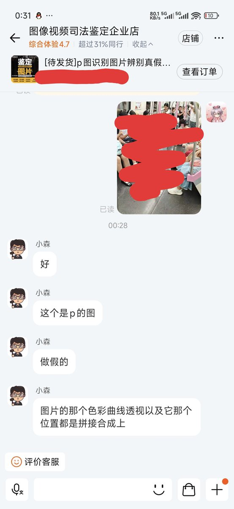
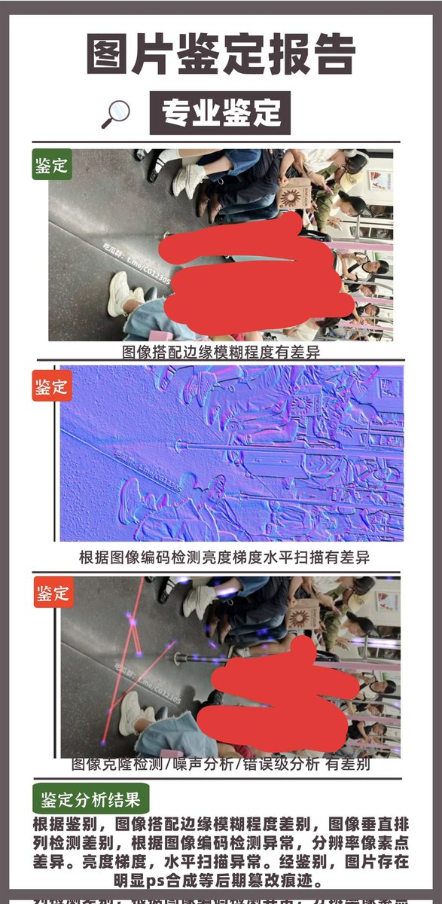

時璃風医詩🍥🌈
@hagishigure
你應該起訴那個程梓語，我已經準備好一份起訴書了，一旦有人開團我就回國跟上。
雖然我起訴那個🍊的是另外一個刑事附帶民事的起訴和這個事情0關聯。


寒涟漪
@HANLIANYI331
九月上旬，一张被AI制作出来的“地铁露出图”在网上流传。
当时我看到这张图后，花了大几百元，连续找了四家有图片司法鉴定技术的淘宝店进行鉴定，结果均为“AI和后期痕迹明显”。
当时我得到结果发出来后，却在几分钟后删除了。 https://t.co/VQKa3JwOXk